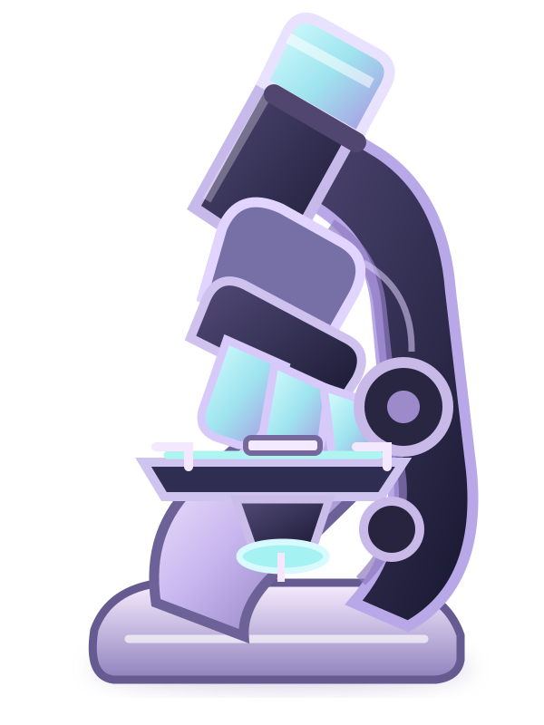

Duas equipes com quantidade semelhante de participantes, usando o mesmo dispositivo.
✦ UMA MISSÃO DE DESCOBERTAS ✦
O desafio da
microscopia!
Aprenda sobre lentes, descubra como as imagens se formam e reconstrua um microscópio peça por peça.
🧩 Quebra-cabeça🔬 12 desafios⏱ 12 minutos
Uma experiência para aprender brincando. ♡
🔬
✧

CIÊNCIA
É DESCOBERTA!
É DESCOBERTA!
SESI BELO JARDIM · 2ª SÉRIE AOBSERVAR • INVESTIGAR • DESCOBRIR
📖 PREPARE-SE PARA A MISSÃO
Seu guia científico
Leia este pequeno resumo antes de jogar. Você também poderá consultá-lo durante os desafios!
🌷 ORGANIZEM A EQUIPE
Quem vai investigar?
As duas equipes respondem a cada desafio. Cada uma conversa e registra sua própria resposta antes da revelação.
🤝 Em cada rodada, as duas equipes terão uma vez para discutir e responder. Escolham um porta-voz diferente a cada pergunta. O jogo só revela o gabarito depois das duas respostas.
🔬 MISSÃO EM ANDAMENTO
Reconstrua o microscópio
TEMPO12:00
MONTE A IMAGEM
0 / 12Quebra-cabeça do microscópio
As peças vão aparecer aqui!
Responda aos desafios para desbloqueá-las.
Responda aos desafios para desbloqueá-las.
✦ Arraste uma peça liberada até o espaço com o mesmo número. No celular, toque na peça e depois no espaço correspondente.
Vez de encaixar: Equipe Azul
DESAFIO 01 / 12VEZ DA EQUIPE AZUL
FUNDAMENTOS DA ÓPTICA
Carregando pergunta...
As duas equipes responderão antes da revelação.
🤝 Uma resposta por equipeRODADA 1 DE 12
🔎 ETAPA FINAL · IDENTIFICAÇÃO
Conhecem cada parte do microscópio?
Com a imagem montada, cada equipe vai identificar uma peça e explicar sua função. Esta etapa vale 5 pontos extras.
VEZ DA EQUIPE AZUL+5 PONTOS
PEÇA SORTEADA
Ocular
Qual é a função dessa parte no microscópio?
Conversem em equipe antes de escolher. A resposta e a explicação aparecem depois da confirmação.
✿
MISSÃO CONCLUÍDA!Olha só o que
vocês construíram!
0EQUIPE ROSA
0EQUIPE LILÁS
00:00TEMPO UTILIZADO
As partes do microscópio
📚 COMO FUNCIONA
Manual do jogo
Regras rápidas para uma partida justa e divertida.
Antes da partida, todos podem ler o guia científico para conhecer os conceitos.
As duas equipes respondem à mesma pergunta. A primeira registra sua escolha sem ver o gabarito; depois, a segunda responde. A ordem se inverte na pergunta seguinte.
Cada equipe ganha 10 pontos por resposta correta. Não há perda de pontos por erro. O gabarito só aparece depois que as duas equipes responderem.
Depois das duas respostas, uma peça é liberada. As equipes se revezam para encaixar uma peça por vez no microscópio, colaborando na montagem.
Troquem o porta-voz a cada pergunta para que todos participem. Ao completar as 12 peças, cada equipe responde a um desafio final: identificar uma parte sorteada e explicar sua função. Essa etapa vale 5 pontos extras. Vence quem tiver mais pontos ao final; se ainda houver empate, as equipes fazem uma explicação oral adicional escolhida pelo professor.
Fontes para estudar
- OPENSTAX. University Physics, Volume 3: Thin Lenses. Acessar material.
- OPENSTAX. University Physics, Volume 3: Microscopes and Telescopes. Acessar material.
- NIKON MICROSCOPYU. Microscope Components. Acessar material.
- NATIONAL CANCER INSTITUTE. Cervical Cancer Diagnosis. Acessar material.
O microscópio auxilia a observação de células e tecidos. A interpretação dos exames e o diagnóstico devem ser realizados por profissionais de saúde.